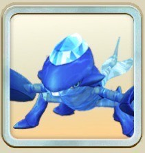
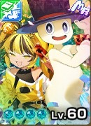
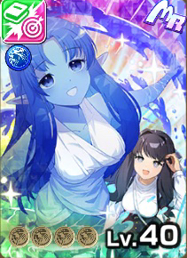
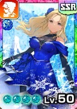

アクアマリン

アクアマリン
青オーラ
怪物
主血統アローヘッド
副血統ウンディーネ
基礎データ
素質
ライフ+10%
ちから-10%
かしこさ0%
命中+15%
回避-5%
丈夫さ+10%
- 素質合計
- +20%
- 最高素質
- 命中 +15%
特徴
ガッツ回復力D
移動速度B
成長タイプ晩成
ヨイワルややヨイ
サイズふつう
適性データ
地形適性
砂漠D
森林D
海岸B
雪山D
火山E
- 得意（B以上）
- 海岸B
- 苦手（D以下）
- 砂漠D・森林D・雪山D・火山E
間合い適性
遠D
中B
近C
零E
- 得意（B以上）
- 中B
- 苦手（D以下）
- 遠D・零E
適性評価は当サイト独自の指標です。B以上は育成でSに届く適性、D以下はSに届きにくい適性として、高いランクを少し重く見て5.0満点で算出しています。
相性のいいアシスト能力
アクアマリンはライフの素質が高い（+10%）ので、ブロックで被ダメを減らすオフリアボイド IIを活かしやすい。ガッツ回復力Dがアクアマリンの弱点。デコレートマジック IIでカバーしよう。
-
デコレートマジック II
[怪物]オーラ技命中時、次の効果
[業物Lv5]
与ガッツダメージ分ガッツ吸収<消費ガッツ50%まで>
[有利]クリティカル時、ガッツダメ<+30%> - ▲ ガッツ回復力はDと低めで、この能力のガッツ回復で補える。
-
俺は喰らう者だ IV
[自身青] R4以上のオーラ技発動時、次の効果が発動
発動技と同じオーラ種の技性能<40%>上昇を付与<各オーラ種毎に1回>
<青>技発動時、[強撃Lv2]を付与<1回> -
俺は喰らう者だ II
[自身青] R4以上のオーラ技発動時、次の効果が発動
発動技と同じオーラ種の技性能<20%>上昇を付与<各オーラ種毎に1回>
<青>技発動時、[強撃Lv1]を付与<1回> -
無垢な寝顔 II
[自身青]バトル開始時に次の効果を発動
最大ライフ+300
[前半]最大ライフ<20%>以上の被ダメ軽減
[前半][有利]追撃無効 - ▲ ライフは素質+10%で伸びやすい。この能力でライフをさらに上げられる。
-
オフリアボイド II
[怪物]<相手オーラ>技発動時、完全回避Lv2<1回>
さらに、被ダメブロックLv2<20秒><1回> - ▲ 回避は素質-5%の弱点。この能力で埋め合わせたい。
※新しいカードの能力から並べています。
評価解説
- LINEモンスターファームで満を持して初出しとなるウンディーネ派生のアロへ
- 全体的に涼しげな見た目をしており、覚醒すると更に透明感が増す(美しい)
- こんな見た目なのに青オーラ技無いんです。ホント何とかして
おすすめ編成
おすすめ編成① かしこさ型
クリス

ノア

オフリィ

ルリ

シエナ
レンタル
リュージン